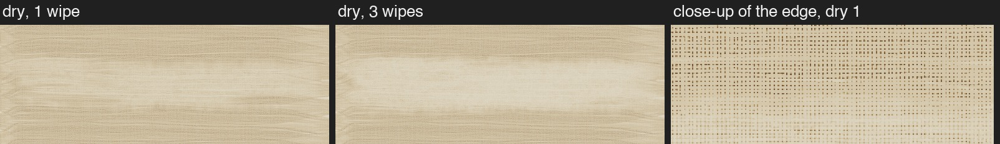
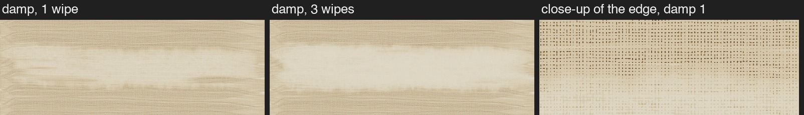
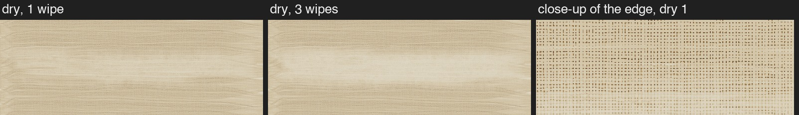
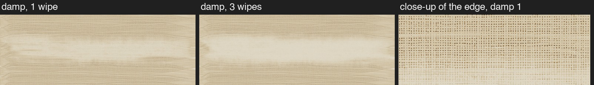

Dry rag: version 4 from round 1. Damp rag: B (mild) from round 2 (round 4). Same wash, rag and path. The close-ups show the bottom edge of the wipe near its right end.
Toward the edge the rag simply takes less, evenly. That gives the "cloud" look: a soft haze laid over the weave.


The cloth's outline stays sharper, but near its rim it presses lightly, so there it only touches the raised threads of the canvas. The weave's pattern carries through the edge instead of a haze. It also takes a little less paint overall.


Still not modeled: spirits running into the paint beside the wipe. Code: rag::tests::thin::damp_render.